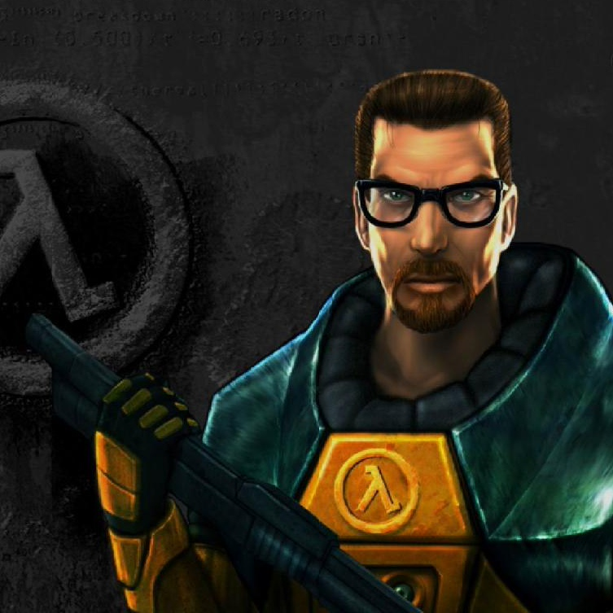

В первой главе я задаю тон всей книге: это в первую очередь развлечение
для скучающих гопников-интеллектуалов. Мы с моими маленькими читателями
попробуем представить себе мир как инженерную схему, этакий мысленный каркас.
Я пишу о том, что бывает, когда схема несовершенна, и почему банки,
а не негры потеряли дома во время ипотечного кризиса. Рассказываю о появлении
страхования и о многих других неожиданных финансовых – и не только
– изобретениях. Что такое информационные технологии 19 века? Как Гитлер
выплачивал пенсии? Кто сделал чемодан на колёсиках? Казалось бы, ерунда.
Но, скажу вам по секрету, всё это важно.
Во второй главе я подробно рассказываю о том, откуда взялись акции
и корпорации, чтобы вы поняли базовую идею организации современной
большой компании – типа Apple или Google. Как было у римлян, у
генуэзских купцов и у английской королевы, кто кормил гусей,
кто устраивал туры в Тай и кто кого облапошил.
Третья глава – про современное устройство международных корпораций,
советы директоров и проблемы управления такими штуковинами, особенно
если внутри сплошные говнюки и кретины. Как они проникают в
кресла председателей правления? Почему Карл Айкан их ловит и
анально карает? Чем Америка похожа на тазик с бухлом? Без сомнения,
откровений тут будет много.
В четвёртой главе я рассказываю об акциях, голосованиях и каким
образом оно всё оказывается на бирже. Сотона ли вы, если у вас
ровно 666 акций? Как избирают Чубайса? Почему Уоррен Баффет не
делает сплиты? Что андеррайтеры называют красной селёдкой и чем
они похожи на организаторов концерта Стаса Михайлова? Все эти
тайны будут раскрыты.

.........